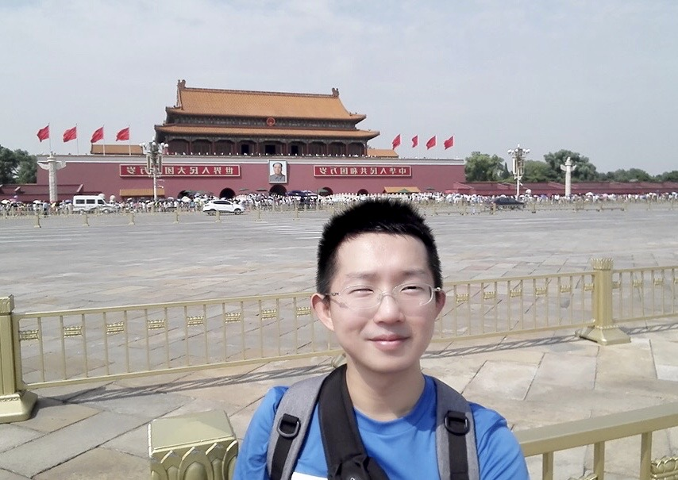

Hello World! My name is Caitao Zhan, a Ph.D. candidate at WINGS lab, Computer Science Department, Stony Brook University.
My advisor is Prof. Himanshu Gupta.
I am a computer networking researcher, with a focus on wireless and spectrum. I actively seek opportunities at the intersection of computer networking and machine learning.
News:
- Dec. 2019: Passed Candidacy exam. Now I am a PhD Candidate!
- Dec. 2019: One paper accpeted at INFOCOM 2020!
- Nov. 2018: Attended SenSys 2019 at NYC.
- Dec. 2018: Finished 7 courses with all A or A-: Analysis of Algorithms, Data Science Fundamentals, Topics in Computer Science (Smart Energy); Theory of Database Systems, Fundament of Computer Networks, Data Mining Concepts and Techniques; Machine Learning. Also attended one programming language seminar.
- Nov. 2018: Received IMC 2018 travel grant and attended IMC 2018 at Boston.
- Jun. 2018: Joined WINGS lab.
- Aug. 2017: Joined Stony Brook University CS PhD program
Publications:
Selection of Sensors for Efficient Transmitter Localization. Arani Bhattacharya, Caitao Zhan, Himanshu Gupta, Samir R. Das, and Petar M. Djuric. In IEEE International Conference on Communications (INFOCOM) 2020
More about me:
My GitHub. I like coding.My LinkedIn. More about my experience.
My Blog. I am blogger since Oct. 2014. Up to Jan. 2020 I have 270K+ page views.
My YouTube Channel. I am a vlogger since Dec. 2019.
My LeetCode Profile. I started to solve Leetcode problems since Nov. 2019. Back in 2014, I spend half a year participating in ACM-ICPC and solved 200+ problems on HDU online judge.